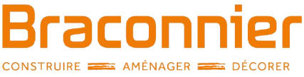

Conseil technique
Une aide pour choisir le matériel adapté à vos besoins.
Découvrez nos équipements disponibles à la vente et à la location.

Matériaux de construction, aménagement et décoration pour vos projets.
Parcourez les catégories, sélectionnez une ou plusieurs machines et demandez une offre. Disponibilité et tarifs à confirmer par notre équipe.
Ajoutez les machines qui vous intéressent puis précisez votre période souhaitée. Notre équipe pourra vous répondre avec une offre et les disponibilités.
Que vous soyez professionnel ou particulier, Outilsud vous accompagne dans le choix de votre équipement : machines, outillage et accessoires.
Vous recherchez une référence précise ? Contactez-nous pour connaître les solutions proposées.
Demander un renseignement →Une aide pour choisir le matériel adapté à vos besoins.
Renseignez-vous sur les possibilités de diagnostic et de réparation.
Des réponses adaptées aux besoins des artisans et entreprises.
Chez les Braconnier, l'esprit d'entreprise se transmet de génération en génération. Jonathan Braconnier a choisi de conjuguer cette tradition familiale avec sa passion pour la technique, les machines et l'outillage.
Après avoir rejoint les Établissements Braconnier à 26 ans, il identifie une activité à développer : l'outillage professionnel. Encouragé par sa famille, il donne naissance à Outilsud le 1er avril 2009.
Une entreprise dédiée aux machines, à l'outillage et aux besoins techniques des professionnels et particuliers.
Outilsud s'inscrit dans l'histoire des Établissements Braconnier, spécialisés dans les matériaux de construction et l'aménagement.
Une offre complémentaire entre le matériel de chantier, les équipements et l'expertise de terrain.
Découvrez également les matériaux de construction et les carrelages proposés par les Établissements Braconnier.
Découvrir les Établissements Braconnier ↗Vente et location de machines et d'outillage.
Coordonnées : à compléter avec les informations officielles de l'entreprise.
Horaires : à confirmer.
Faire une demande de location